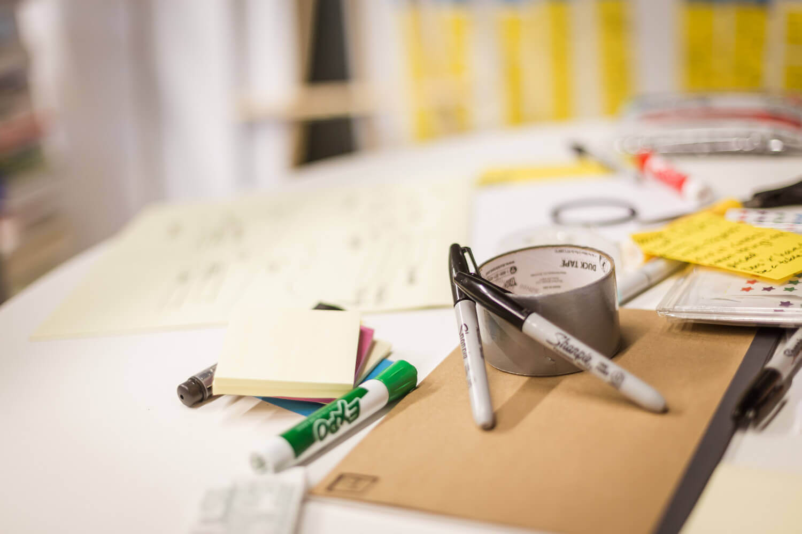

Learn More:
Design Process
Working as a product designer at VMware requires utilizing a number of different craft skills, processes, and a toolkit of design patterns and best practices. Pivotal Software (acquired by VMware in 2020) championed an incredibly effective process that can be adapted to suit any project or need. This process is called Discovery and Framing (often abreviated as D&F) and can be represented by the double-diamond timeline diagram below.
Discovery and Framing is a pattern used to define what the minimum viable product we want to build, and why. Going through this process is crucial for validating product requirements and assumptions to make sure that everything we build will be exceptionally valuable.
At the Kickoff, the team is ready to start thinking about problems, and comes together to review the current state of the product, program, or niche that they've been assigned. At the midpoint, Problem Definition, the team has a well defined and validated problem ready to be solved. The last milestone, referred to as an Inception, brings all the key stakeholders together to review the results of the process - the personas, defined problem, prioritized soluton, and any additional business or technical constraints that have lead to a backlog of stories ready for engineering. From this point on, the team can accelerate toward shipping an MVP.
The goals of this process are:This is the part of the Lean Startup practice which encourages iterative 'Build, Validate, Learn' cycles. Read below for more information on each part of the process.
Discovery is where the team collaborates with key stakeholders in the company, subject matter experts, open source users, and customers (or customer proxies like Sales Engineers and Solution Architects in some cases) to determine what problem it is we're trying to solve. Sometimes we have a clear opportunity to investigate based on integration with aligned products, industry trends, or survey feedback. Other times, we might want to start with outreach to better understand what our users are going through, and how our software can help.
This stage involves open-ended research, workshops, interviews and any exploration needed to discover what the problem is. I'll usually includes a selection the following activities/workshops, depending on the initiative:
Framing is establishing how to solve the problem. During this stage, the team is focused on researching and validating their ideas. In addition to curating and facilitating this process, my role is to advocate for the user experience and push back against solutions that sacrifice too much for the sake of business value or technical simplicity. My job is to make sure that whatever solution the team agrees upon is one that the end user is going to love.
A Framing phase usually includes a selection the following activities/workshops:
These exercises help the team sift through all the potential solutions and validate the product and user value of each one to find the right solution to roadmap and engineer.
A Design Studio is a group sketching exercise that is used to help crowdsource visual ideas. The method provides a simple and effective way to generate many divergent ideas, converge on the strongest facets of each, and leave the meeting with a rich set of artifacts (drawings, in this case) to be developed into wireframes or user stories.
Once we have validated our research, have a well developed spectrum of personas, and have prioritized a problem to solve, a design studio can generate a number of solutions from a number of perspectives in a short amount of time. The exercise is self-documenting, creating sketch artifacts that can be annotated and used to generate wireframes or mockups for prototyping purposes.
Inviting the right stakeholders helps to create buy-in from the very early stages of a project. By participating in the process of generating ideas together, the attendees develop a deep understanding of the rationale behind different approaches later in an product or feature's development.
The specific methods and agenda can vary depending on the problem being tackled. Learn more by reading Nielsen Norman's guide to facilitating Design Studios.
{kind=link}
{kind=link}
{kind=link}